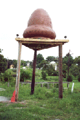
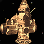

Le crash de Kecksburg
Observation
Photographie du train de boule de feu du 9 décembre, prise par Lowell Wright au Lac Orchard (Michigan),
à quelques secondes de sa disparition
Le 1965-12-09 16:45 , un objet étrange traverse le ciel au-dessus des Grands Lacs, à la frontière des
États-Unis et du Canada . Plusieurs témoins aperçoivent l'objet en
flammes et le signalent aux autorités, qui croient d'abord un avion en feu. Les
témoins décrivent une masse orangée traînant de la fumée dans son sillage. Ces récits correspondent si bien à la
description d'un météore se désagrégeant très haut au-dessus de la Terre que cette explication est rapidement admise par les
autorités et la communauté des scientifiques .
Crash
Le site du crash, près de Kecksburg
Cependant, dans la même soirée, un objet fait un atterrissage en catastrophe dans un bois près de Kecksburg (comté de Westmoreland, Pennsylvanie) . Toute la région entend un énorme "bang"
sonore, et sent la puissante secousse qui fait trembler la terre. Le sillage de fumée épaisse, produite par l'objet
avant qu'il ne s'écrase, reste visible pendant ~P20M . Il est même filmé par un habitant de Pontiac (Michigan) , à 300 km de là. Les services d'urgence appelés sur les lieux constatent
la présence de cette étoile de feu décrite par les habitants, alors même qu'ils s'attendent à trouver l'épave
d'un avion écrasé. Mais le temps qu'il leur faut pour arriver suffit à une unité de l'armée pour prendre position
avant eux sur les lieux de l'accident. Par la suite, l'armée déclare n'avoir rien trouvé dans la forêt et affirme
que les divers et nombreux signalements d'ovnis ne constituent, en fait, que des erreurs d'identification.
Découverte
Appuyé par son assistant chef James Mayes, Robert Bitner raconte son étrange expérience à Clark McClelland et à Stan Gordon, enquêteurs privés de la région. Le soir,
les 2 hommes pénètrent dans les bois, s'attendant à trouver les débris d'un avion écrasé. Ils découvrent en fait un
objet de forme conique, d'environ 3,30 m de haut, planté dans le sol selon un angle d'environ 30°. Le haut des
arbres est décapité et les buissons sont écrasés, mais l'objet se trouve quasiment intact, ne portant aucune trace
d'une quelconque combustion. A sa base, on peut voir un cercle sur lequel est inscrite une suite de symboles
graphiques. Bitner racontera comment son équipe a pu observer l'objet, avant de se faire intercepter par l'armée,
puis escorter en dehors du bois. James Mayes racontera par ailleurs qu'un camion à plateau quitta les lieux très
tard dans la nuit, transportant un objet recouvert d'une bâche. Il ne faisait aucun doute que l'armée américaine
avait enlevé l'objet du bois, niant ensuite y avoir découvert quoi que ce soit d'intéressant. C'est le 662ᵉ Escadron
de Radar, basé à l'arsenal de Oakdale , qui fut le groupe militaire impliqué dans
le traitement de ce crash.

Le "gland" de Kecksburg devant la Caserne de Pompiers de la ville, réalisé à l'occasion de l'émission
Unsolved Mysteries au début des années 1990s
Le lendemain, selon un officier de la base de l'armée de l'air de Lockbourne , près de
Columbus (située à environ 240 km de Kecksburg), un camion à plateau arrive effectivement à la base avant l'aube,
transportant un important objet de forme conique caché sous une bâche. Le camion entre à l'arrière de la base par un
accès peu utilisé, où l'officier est de garde. Il reçoit ainsi l'ordre de tirer sur quiconque essaierait d'approcher
du camion, sans être informé de ce qui se trouve exactement sous la bâche. A 07:00 , Le camion prend la
route de la base aérienne de Wright-Patterson , siège d'un projet d'étude des
ovnis. Equipement spatial secret américain ou étranger ou autre chose ? On n'a jamais su ce qui avait été vraiment
récupéré.
La presse relate l'affaire Gatty, Robert: "Unidentified
Flying Object report Touches Off Probe Near Kecksburg ", Greensburg Tribune-Review , 10 décembre 1965, p. 1
Gatty, Robert: "'Unidentified
Flying Object' Falls Near Kecksburg ", Greensburg Tribune-Review , 10 décembre 1965 .
Reportage
En 2002 là chaîne de télévision Sci Fi demande à Leslie Kean de
trouver une sorte de "nouveau Roswell", une affaire d'ovni avec des témoins crédibles et si possible des indices
physiques. Elle sélectionne alors l'incident de Kecksburg et prend la direction de la recherche de la CFI pour soutenir son effort d'enquête sur cette affaire et
d'autres "The New Roswell: Kecksburg Exposed", Sci Fi Channel, 2003 .
En 2003-09 Kean dépose une plainte FOIA contre la NASA "Complaint for Injuctive Belief ", Jerry
Pippin, 2003-09-12 , qui indiquera n'avoir pu retrouver aucun document sur l'affaire. Le 2003-10
-17 un accord est trouvé pour mener des recherches supplémentaires et que la NASA paye les 50000$ de frais d'avocat de Kean Hamill, Sean D.:
"NASA to probe self for UFO data ", Chicago Tribune, 2007-12-10
.
Révélations

Kosmos 96 (déployé), également en forme de gland
En 2005-12 , juste avant le 40ᵉ anniversaire du crash, la NASA publie un
communiqué indiquant avoir examiné des fragments métalliques de l'objet et qu'il s'agissait d'un satellite russe "Cosmos 96 ", NASA étant réentré .
David Steitz, le porte-parole de l'agence, déclare Communiqué de l'AP :
L'objet semble avoir été un satellite russe qui ré-entra dans l'atmosphère et
se disloqua. Des experts de la NASA étudièrent des fragments de l'objet, mais les
archives de ce qu'ils ont trouvé ont été perdues dans les années 1990s .
En règle générale, nous ne suivons pas les traces d'ovnis. Ce que nous pouvions faire, et ce que nous avons
apparemment en tant qu'experts en vaisseaux spatiaux dans les années 1960s , c'est de
jeter un œil à quoi que ce fut et donner notre opinion d'expert. C'est ce que nous avons fait, nous l'avons classé
et c'en a été la fin. Malheureusement, les documents soutenant ces conclusions ont été égarés.
Cependant, l'U.S. Space Command aurait indiqué que Kosmos 96 s'était écrasé au Canada peu après
03:00 , plus de P12H avant l'incident de Kecksburg Kean, Leslie : Sci Fi Channel, 2003
On évoque aussi la fameuse "cloche nazie" pour expliquer l'objet.
Un satellite plus secret ?
En 2015-02 , Owen Eichler (natif de Shafton, témoin âgé de 13 ans à l'époque de l'incident, puis ayant
enquêté des décennies sur le sujet) présente à John Ventre (directeur d'état du MUFON ) une théorie d'explication Ventre, John & Eichler, Owen: "Has A Top 5 UFO Case Been Solved? - Was the Kecksburg UFO A GE Mark 2 Reentry Vehicle? ", Jim Church Radio, 2015-10-15
selon laquelle le véhicule aurait été lancé depuis l'île de Johnston (Pacifique) 2 jours plus tôt, dans le cadre
d'un programme Top Secret des USA pour espionner l'URSS depuis l'espace (ce qui expliquerait pourquoi l'objet a été
emporté mais jamais officiellement expliqué, à la manière de l'explication du ballon Mogul pour Roswell ) Majors, Dan: "Five decades later, the Kecksburg UFO is identified (probably) ", Post Gazette de Pittsburg,
2015-12-06 .
Cette hypothèse sera cependant contestée Molczan, Ted: "No, the Kecksburg UFO was not a GE Mark 2 Re-entry Vehicle"
Printy, Tim: "Kecksburg update", 2016-01 .
Références :